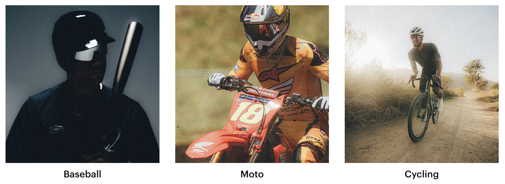

Sports
100% sunglasses improve sports performance through high-definition HiPER® lenses that enhance contrast, specialized lens coatings (hydrophobic/oleophobic) that repel water and oil, and lightweight, durable TR90 frames with ultra-grip rubber for a secure fit. They are designed for high-intensity activities like cycling, baseball, and running, offering superior visibility and protection.

More Information
Enhanced Visibility & Clarity: HiPER® lens technology boosts color and contrast, allowing athletes to see more detail, which is critical for tracking fast-moving objects like baseballs or identifying terrain changes in mountain biking.
Superior Protection & Field of View: The cylindrical shield lens design provides a 360-degree, unobstructed view while protecting against wind, dirt, and UV rays (UV400).
Secure & Comfortable Fit: Utilizing TR90 frames and ultra-grip rubber nose pads/temples, these glasses stay in place during intense movement and heavy sweating.
Anti-Fogging & Ventilation: Lower air scoops in the frame increase air circulation, reducing moisture buildup on the lens during high-intensity, sweat-heavy activities.
Durability: The sunglasses are constructed to be highly durable and lightweight, minimizing the risk of breakage or discomfort.